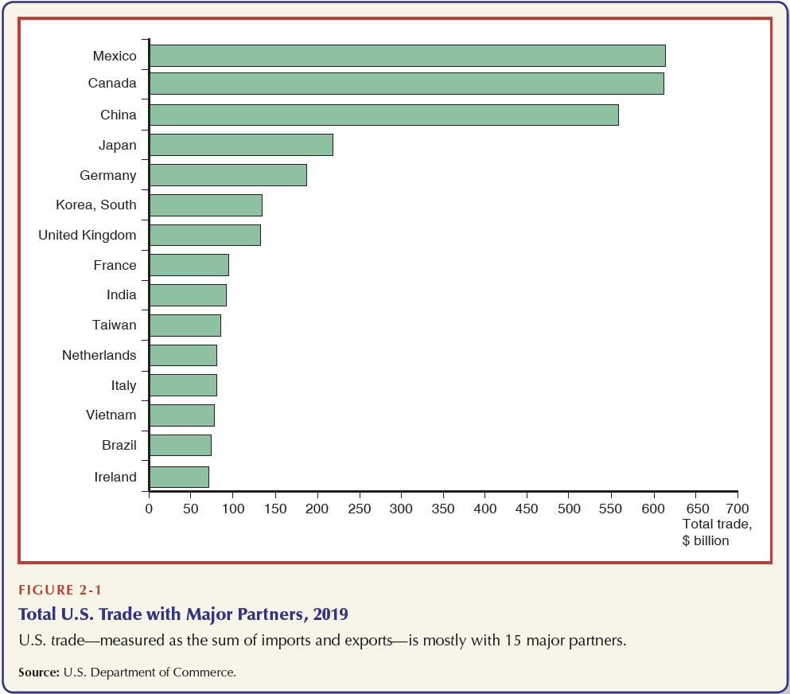

Introduction and Overview
EC 380 - International Economic Issues
2025
Course Goals
In this class we will:
Learn baseline models that help explain why countries trade
Analyze policy-relevant trade tools
Tariffs
Quotas
Subsidies
Explore global finance through exchange rates and BoP
Syllabus
Class Information
Schedule: Monday & Wednesday in Straub 245
Office Hours: Wednesdays from 09:00 am to 11:00 am
Lectures
Slides are meant to complement the lectures, not substitute them
I will lecture, go through example problems, ask you to solve things, etc
By being in lecture, the goal is for you to understand things beyond the textbook
Course Logistics
Our textbook is International Economics by James Gerber (8th Ed)
- Any other reading/material I will be responsible for providing to you
Course Schedule
- W1 - W3: Theory of Trade
- W4 - W7: Trade Policy
- W8 - W10: Global Finance
Course Grades
- 5% \(\rightarrow\) In-Class Activity Participation
- 25% \(\rightarrow\) 5 Problem Sets
- 10% \(\rightarrow\) 4 Quizzes
- 30% \(\rightarrow\) Midterm Exam
- 30% \(\rightarrow\) Final Exam
In-Class Activity
Every so often we will be creating our own world market
The class will be split into countries (groups of 8)
Each time the economy will have different rules and circumstances
The goal is to give you an interactive component rather than just lectures, homeworks and exams
Assignments
Problem Sets
- Will be assigned a week before they are due
- Due at 2:00pm (before lecture) but can submit until 11:59pm of due day
- A late submission (anything past 2:00pm) will incur a propoortional late penalty
Submissions
- Only PDF files are accepted
- If you write your answers on paper and take pictures/scan them, compile them onto one pdf file
- To do this use any website that merges pdf files (be sure to put them in order!)
- I personally use Adobe
Assignments
Quizzes
- These are intended to test your critical thinking and develop your ability to form coherent and succint arguments
- Have a 45min time limit
- Submissions should be no more than a paragraph or two in length
Exams
- Midterm exam is scheduled for Wednesday of Week 5 (Feb 5th)
- Final exam is scheduled for Wednesday March 19th at 2:45pm
Make-Up Assignments
Absolutely no make-up assignments will be given. Please do not ask. If a situation ever comes up that gets in the way of your being able to submit something, let me know beforehand and we will see
In extreme circumstances that lead you to miss the midterm exam I will consider re-weighting your grade toward the final exam. To qualify for re-weighting, you must notify me no later than two days after exam. Consideration for this form of accomodation is entirely subjective.
Canvas & Course Set-up
Canvas will serve as a place to submit assignments and as a gradebook
Everything else will be on our class website
International Trade Overview
International Integration (Good & Bad)
Generally, we think of integration of nations to bring many benefits
Innovation in products/services
More affordable goods
Flow of investments toward scarce resource nations
But this process can also make nations vulnerable to foreign economic problems
The Great Recession was a US Housing and Banking crisis
The 1970s oil price shocks
The Covid Pandemic
Trade Integration
Let’s define it
Trade Integration can be roughly measured through 4 criteria:
- Trade Flows
- Capital Flows
- People/Labor Flows
- Similarity of prices in different markets
World Trade Movement
Trade Growth Has Outpaced GDP Growth

Trade to GDP Ratio
\[\begin{align*} \dfrac{(\text{Exports} + \text{Imports})}{GDP} \end{align*}\]
Trade & Country Size
In Trade Size Can Matter
Importance of Trade Varies by Country

Trade Overview
- Trade is important to nations and increasingly so
- Flows of Trade (Imports/Exports) represent a large proportion of nations GDP
- Trade openness varies by country size
Questions come to mind:
- Why do countries trade so much?
- What do they gain from trading?
- How does trade impact other aspects of the economy (labor market, geopolitics, etc)?
What Goods do Countries Trade?
Costa Rica
United States

How Did They End Up There?
Countries specialize and export core products
Trading goods that they are “best” at producing results in gains from trade
Specialization comes from where each country has a Comparative Advantage
What factors, other than the fundamentals, influence specialization?
Foreign Direct Investment (FDI)
Knowledge Sharing/Diffusion
Cross-border Migration Shocks
And much more
Why Does Trade Continue to Grow?
Trade is not frictionless. There are costs to trading with other nations
Trade growth can be largely attributed to reduced trade barriers over time
This is called trade liberalization
Some examples are:
Costs of shipping/transport are lower
Tariff rate reductions
Preferential Trade Agreements
Relaxing non-tariff measures (quotas)
Reduced Tariff Rates

Lower Transport Costs
Economics Can Be Very Complex
Explicit trade barriers have fallen over time, coinciding with the growth of trade relative to economic activity
Hidden barriers are the next hurdle. Much of the current literature suggests is far more impactful than existing tariff rates
- Current trade theory and literature focuss on heterogenous agent models, which was orignally created to explain why not every firm functions as an exporter
We will not be diving that deep into international trade. Our primary goal is to get a good understanding of how/why it works and understanding basic dynamics.
Overview of Trade Theory
Why does trade occur? This is our main question.
There are two strands within the field of international trade:
I. Neoclassical Models of Trade (‘Old Theories’):
- Ricardian Model \(\Rightarrow\) Technology differences spur trade
- Hecksher-Ohlin Model \(\Rightarrow\) Resource differences spur trade
II. ‘New’ Trade Theory:
- Krugman Model \(\Rightarrow\) Demand/Want of variety spurs trade
- Melits Model \(\Rightarrow\) Heterogenous firms drive trade
Next Steps
We will begin to look at the theory, starting with the Ricardo Model. It involves:
- Single factor of production (labor)
- Two countries (home,foreign)
- Technology differences across countries
It will be key to note the models attributes as they will all have some key differences. Each model will also have predictable outcomes.
For Wednesday
- Read through Ch.1: Introduction to the World Economy (p. 24 - 37)
- Read through Ch.3: Comparative Advantage and the Gains from Trade (p. 64 - 85)
Optional
- Skim through Krugman (1993) “What do Undergrads Need to Know About Trade”
EC380, Lecture 00 | Introduction and Overview